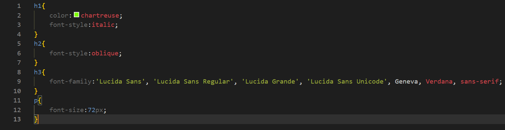
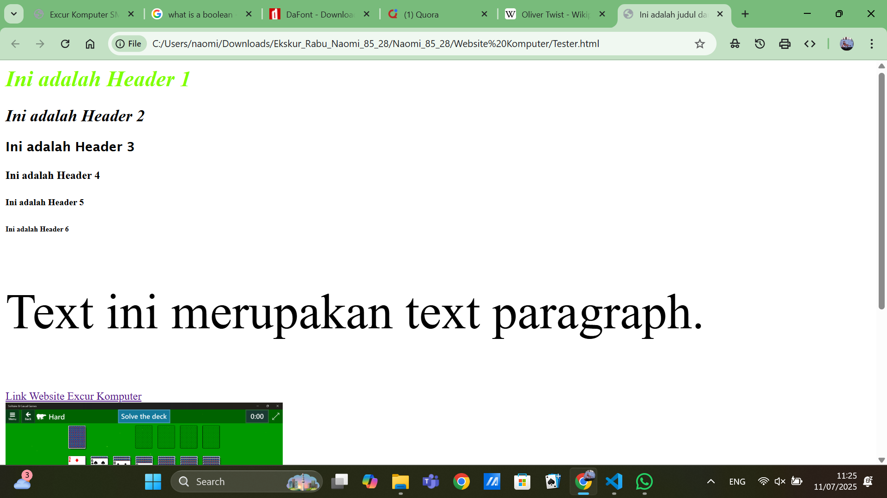
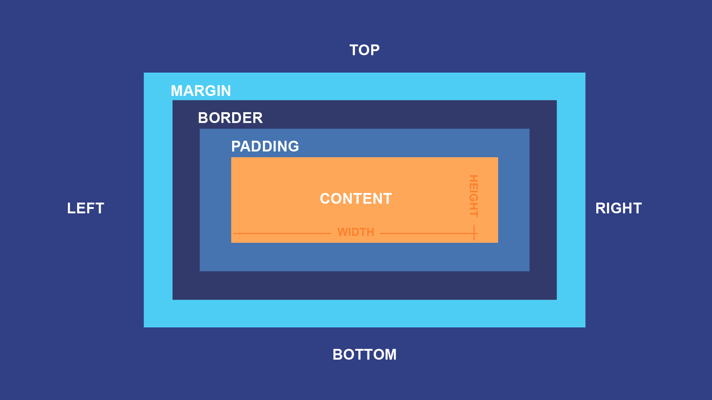

CSS merupakan sebuah stylesheet yang digunakan untuk mengatur desain dari sebuah website. CSS biasanya disambungkan kepada sebuah file HTML dan kita bisa mengatur properti dari seluruh website atau hanya sebuah bagian tertentu. CSS mengunakan kurung kurawal untuk menandakan properti yang akan diatur. Pada CSS sebuah properti ditulis setelah sebuah tanda kolon(:) dan tipe properti tersebut dan diakhiri dengan semicolon;
Contoh dibawah menunjukkan file CSS yang mengatur properti dari seluruh website (yaitu bagian body) dan juga bagian h1:

Pada CSS, text memiliki banyak properti, yang paling banyak digunakan adalah size, family, color dan style. Tipe properti untuk ukuran adalah font-size, untuk tipe font adalah font-family, untuk warna hanya menggunakan color, dan untuk effect pada text menggunakan font-style.
Contoh CSS untuk text:

Contoh hasil CSS pada Text:


Box model merupakan sebuah layout mengenai semua element pada HTML. Content merupakan bagian dimana text dan gambar muncul. Padding merupakan sebuah area transparan tepat diluar content. Border merupakan sebuah batasan yang mengelilingi padding dan content. Margin merupakan sebuah area transparan di luar border.
background-color: mengganti warna background konten elemen tertentu
width: mengganti lebar konten elemen menjadi jumlah tertentu
height: mengganti tinggi konten elemen menjadi jumlah tertentu
padding: mengganti lebar padding secara keseluruhan menjadi lebar tertentu
border-width: mengganti lebar dari border elemen tertentu
border-color: mengganti warna border elemen tertentu
margin: mengganti semua margin menjadi lebar tertentu
margin-top: mengganti margin atas menjadi lebar tertentu
margin-bottom: mengganti margin bawah menjadi lebar tertentu
margin-left: mengganti margin kiri menjadi lebar tertentu
margin-right: mengganti margin kanan menjadi lebar tertentu